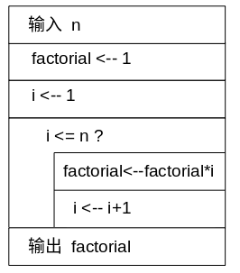
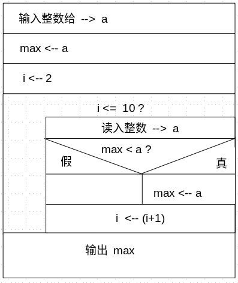

第二章
算法--程序的灵魂
2.1 算法的定义
算法+数据结构=程序

Nikiklaus Wirth
数据结构： 数据的类型和数据的组织形式
算法：为解决一个问题采取的方法和步骤。
2.2.2 流程图表示

- 直观，形象
- 算法复杂时，比较费时
- 容易写出“意大利面”式杂乱无章的代码
例2.1 求：1*2*3*4*5


控制结构三种类型：顺序，条件跳转，循环



例2.6 给定一个年份判断是否是闰年
#include<stdio.h>
#define FALSE 0
#define TRUE !FALSE
int main(void)
{
int year, is_leap_year = FALSE;
printf("input year:");
scanf("%d", &year);
if(year % 400 == 0)
is_leap_year = TRUE;
else
if( year % 4 == 0)
if( year % 100 == 0)
is_leap_year = FALSE ;
else
is_leap_year = TRUE ;
else
is_leap_year = FALSE;
if(is_leap_year == TRUE)
printf("%d is leap year.\n", year);
else
printf("%d is NOT leap year.\n", year);
return 0;
}#include<stdio.h>
#include<math.h>
#define FALSE 0
#define TRUE !FALSE
int main(void)
{
int n, is_prime = TRUE, i;
printf("input number:");
scanf("%d", &n);
i = 2;
while(i<sqrt(n) && is_prime == TRUE ){
if( n % i == 0)
is_prime = FALSE;
else
i = i + 1;
}
if( is_prime == TRUE )
printf("%d is prime number.\n", n);
else
printf("%d is NOT prime number.\n", n);
return 0;
}#include<stdio.h>
#define VINEGAR 1
#define SOY_SAUCE 2
int main(void)
{
int a = VINEGAR, b = SOY_SAUCE, c;
c = a;
a = b;
b = c;
return 0;
}

#include<stdio.h>
int main(void)
{
int a , max, i;
printf("input a number:");
scanf("%d", &a);
max = a;
i = 2;
while( i <= n){
printf("input a number:");
scanf("%d", &a);
if( max < a)
max = a;
i = i + 1;
}
printf("The max number is: %d\n", max);
return 0;
}#include<stdio.h>
int main(void)
{
int a ;
printf("input a number:");
scanf("%d", &a);
if(a % 3 == 0 && a % 5 == 0)
printf("%d can be divisible by 3 and 5.\n", a);
return 0;
}#include<stdio.h>
int main()
{
int m,n,i;
printf("input 2 integer number:");
scanf("%d,%d", &m, &n);
if(m==n)
{
printf("They are the same numbers.\n");
return -1;
}
if(m>n)
{
int t = m; t = n; n = m; m=t;
}
i=m;
while(i>0)
{
if(m % i == 0 && n % i == 0)
{
printf("The greatest common divisor of %d and %d is %d",
m, n, i);
return 0;
}
i = i - 1;
}
return -1;
}
#include<stdio.h>
#include <math.h>
#define VERY_SMALL 1e-9
int main()
{
double a,b,c, d;
printf("input a,b,c:");
scanf("%lf,%lf,%lf", &a, &b, &c);
d = b*b - 4*a*c;
if(fabs(d)<VERY_SMALL)
{
printf("There are 2 same roots of this equation: %f\n", -b/(2*a));
return 0;
}
else
{
if(d<0)
{
printf("There is no REAL root of this equation.\n");
return 0;
}
else
{
double x1,x2;
x1 = (-b+sqrt(d))/(2*a);
x2 = (-b-sqrt(d))/(2*a);
printf("The real roots of this equation is:\n");
printf("x1 = %f\n", x1);
printf("x2 = %f\n", x2);
}
}
return 0;
}#include<stdio.h>
#include <math.h>
#define FALSE 0
#define TRUE !FALSE
int prime(int n);
int main()
{
int m = 100;
while(m<=200)
{
if(prime(m) == TRUE)
printf("%d is prime.\n", m);
m = m +1;
}
return 0;
}
int prime(int n)
{
int sqrt_n = (int) sqrt(n);
int i, is_prime = TRUE;
i=2;
while(i<=sqrt_n && is_prime==TRUE)
{
if( n % i == 0)
is_prime = FALSE;
else
i = i +1;
}
return is_prime;
}